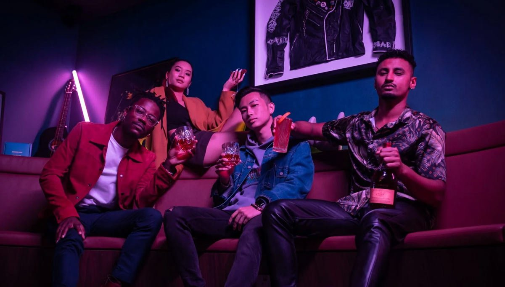

Rémy Martin · Singapore · 2022 · #TeamUpForExcellence
1738 Accord Royal
Launching a 300-year-old cognac house in Singapore by turning the spotlight on the city’s own emerging sound.

The Insight
Luxury launches in Singapore tend to arrive fully formed — global campaign, global faces, local media buy. The audience can feel it.
1738 Accord Royal is a cognac named for royal recognition of excellence — a king acknowledging a craftsman before the rest of the world caught on. The most honest way to tell that story in Singapore wasn’t to import excellence. It was to point at the excellence already emerging here: a local music scene producing world-class artists who hadn’t had their recognition moment yet.
The Idea
Localise #TeamUpForExcellence: make four emerging Singapore artists the embodiment of the 1738 story.
Instead of adapting the global creative, the campaign celebrated the city’s emerging music scene as the modern accord royal — talent recognised early, championed loudly. The Singapore Tastemakers playlist and artist-led branded content put the brand inside the culture rather than adjacent to it.
“Don’t import the story of excellence. Recognise the one being written here.”
The Execution
Working directly with the Creative Director from concept through delivery:
- Translated Rémy Martin’s luxury positioning into locally resonant storytelling around four emerging Singapore artists
- Shaped campaign narratives across branded content and the Singapore Tastemakers playlist
- Held brand consistency across every campaign touchpoint — content, playlist, launch experience

The Result
A global luxury brand launched in Singapore sounding like it was from Singapore.
The campaign earned regional trade coverage and positioned Rémy Martin inside the local music conversation — a launch remembered for the artists it championed, not the bottle it sold. Read the coverage in Branding in Asia ↗